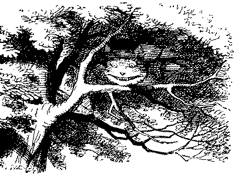
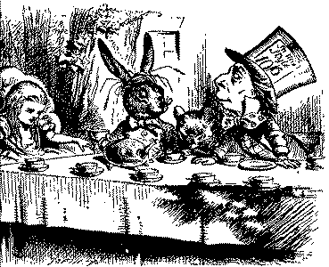
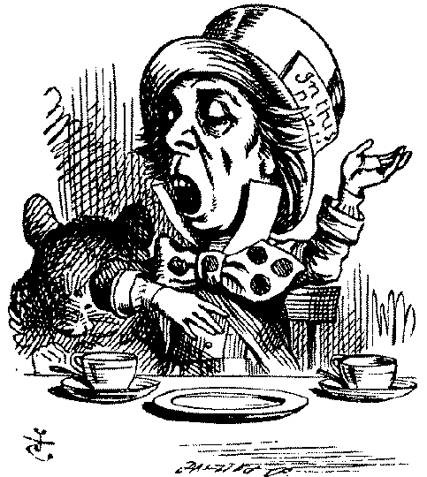

THERE was a table set out under a tree in front of the house, and the March Hare and the Hatter were having tea at it: a Dormouse was sitting between them, fast asleep, and the other two were resting their elbows on it, and talking over its head. "Very uncomfortable for the Dormouse," thought Alice; "only, as it's asleep, I suppose it doesn't mind."
The table was a large one, but the three were all crowded together at one corner of it. "No room! No room!" they cried out when they saw Alice coming. "There's plenty of room!" said Alice indignantly, and she sat down in a large arm-chair at one end of the table.
"Have some wine," the March Hare said in an encouraging tone.
Alice looked all round the table, but there was nothing on it but tea. "I don't see any wine," she remarked.
"There isn't any," said the March Hare.
"Then it wasn't very civil of you to offer it," said Alice angrily.
"It wasn't very civil of you to sit down without being invited," said the March Hare.
"I didn't know it was your table," said Alice; "it's laid for a great many more than three."
"Your hair wants cutting," said the Hatter. He had been looking at Alice for some time with great curiosity, and this was his first speech.
"You shouldn't make personal remarks," Alice said with some severity; "it's very rude."
The Hatter opened his eyes very wide on hearing this; but all he said was, "Why is a raven like a writing-desk?"
"Come we shall have some fun now!" thought Alice. "I'm glad they've begun asking riddles. I believe I can guess that," she added aloud.
"Do you mean that you think you can find out the answer to it?" said the March Hare.
"Exactly so," said Alice.
"Then you should say what you mean," the March Hare went on.
"I do," Alice hastily replied; "at least--at least I mean what I say--that's the same thing, you know."
"Not the same thing a bit!" said the Hatter, "Why, you might just as well say that 'I see what I eat' is the same thing as 'I eat what I see'!"
"You might just as well say," added the March Hare, "that 'I like what I get' is the same thing as 'I get what I like'!"
"You might just as well say," added the Dormouse who seemed to be talking in his sleep "that 'I breathe when I sleep' is the same thing as 'I sleep when I breathe'!"
"It is the same thing with you," said the Hatter, and here the conversation dropped, and the party sat silent for a minute, while Alice thought over all she could remember about ravens and writing-desks, which wasn't much.

The Hatter was the first to break the silence, "What day of the month is it?" he said, turning to Alice: he had taken his watch out of his pocket, and was looking at it uneasily, shaking it every now and then, and holding it to his ear.
Alice considered a little, and then said, "The fourth."
"Two days wrong!" sighed the Hatter. "I told you butter wouldn't suit the works!" he added, looking angrily at the March Hare.
"It was the best butter," the March Hare meekly replied.
"Yes, but some crumbs must have got in as well," the Hatter grumbled: "you shouldn't have put it in with the bread-knife."
The March Hare took the watch and looked at it gloomily: then he dipped it into his cup of tea, and looked at it again: but he could think of nothing better to say than his first remark, "It was the best butter, you know."
Alice had been looking over his shoulder with some curiosity. "What a funny watch!" she remarked. "It tells the day of the month, and doesn't tell what o'clock it is!"
"Why should it?" muttered the Hatter. "Does your watch tell you what year it is?"
"Of course not," Alice replied very readily: "but that's because it stays the same year for such a long time together."
"Which is just the case with mine," said the Hatter.
Alice felt dreadfully puzzled. The Hatter's remark seemed to have no meaning in it, and yet it was certainly English. "I don't quite understand," she said, as politely as she could.
"The Dormouse is asleep again," said the Hatter, and he poured a little hot tea upon its nose.
The Dormouse shook its head impatiently, and said without opening its eyes, "Of course, of course; just what I was going to remark myself."
"Have you guessed the riddle yet?" the Hatter said, turning to Alice again.
"No, I give it up," Alice replied: "what's the answer?"
"I haven't the slightest idea," said the Hatter.
"Nor I," said the March Hare.
Alice sighed wearily. "I think you might do something better with the time," she said, "than waste it asking riddles with no answers."
"If you knew Time as well as I do," said the Hatter, "you wouldn't talk about wasting it. It's him."
"I don't know what you mean," said Alice.
"Of course you don't!" the Hatter said, tossing his bead contemptuously. "I daresay you never even spoke to Time!"
"Pernaps not," Alice cautiously replied: "but I know I have to beat time when I learn music."
"Ah! that accounts for it," said the Hatter. "He won't stand beating. Now, if you only keep on good terms with him, he'd do almost anything you liked with the clock. For instance, suppose it were nine o'clock in the morning, just time to begin lessons: you'd only have to whisper a hint to Time, and round goes the clock in a twinkling! Half-past one, time for dinner!"
("I only wish it was," the March Hare said to itself in a whisper.)
"That would be grand, certainly," said Alice thoughtfully: "but then--I shouldn't be hungry for it, you know."
"Not at first, perhaps," said the Hatter: "but you could keep it to half-past one as long as you liked."
"Is that the way you manage?" Alice asked.
The Hatter shook his head mournfully. "Not I!" he replied. "We quarrelled last March--just before he went mad, you know--" (pointing with his teaspoon at the March Hare) "--it was at the great concert given by the Queen of Hearts, and I had to sing
"Twinkle, twinkle, little bat! how I wonder what you're at!
You know the song, perhaps?"
"It goes on, you know," the Hatter continued, "in this way:---
Up above the world you fly, Like a tea-tray in the sky. Twinkle, twinkle---"
Here the Dormouse shook itself, and began singing in its sleep, "Twinkle, twinkle, twinkle twinkle---" and went on so long that they had to pinch it to make it stop.
"Well, I'd hardly finished the first verse," said the Hatter, "when the Queen jumped up and bawled out, "He's murdering the time! Off with his head!"
"How dreadfully savage!" exclaimed Alice.
"And ever since that," the Hatter went on in a mournful tone, "he won't do a thing I ask! It's always six o'clock now."

A bright idea came into Alice's head. "Is that the reason so many tea-things are put out here?" she asked.
"Yes, that's it," said the Hatter with a sigh: "it's always tea-time, and we've no time to wash the things between whiles."
"Then you keep moving round, I suppose?" said Allce.
"Exactly so," said the Hatter: "as the things get used up."
"But what happens when you come to the beginning again?" Alice ventured to ask.
"Suppose we change the subject," the March Hare interrupted, yawning. "I'm getting tired of this. I vote the young lady tells us a story."
"I'm afraid I don't know one," said Alice, rather alarmed at the proposal.
"Then the Dormouse shall!" they both cried. "Wake up, Dormouse!" And they pinched it on both sides at once.
The Dormouse slowly opened his eyes. "I wasn't asleep," he said in a hoarse, feeble voice: "I heard every word you fellows were saying."
"Tell us a story!" said the March Hare.
"Yes, please do!" pleaded Alice.
"And be quick about it," added the Hatter, "or you'll be asleep again before it's done."
"Once upon a time there were three little sisters," the Dormouse began in a great hurry; "and their names were Elsie, Lacie, and Tillie; and they lived at the bottom of a well---"
"What did they live on?" said Alice, who always took a great interest in questions of eating and drinking.
"They lived on treacle," said the Dormouse, after thinking a minute or two.
"They couldn't have done that, you know," Alice gently remarked; "they'd have been ill."
"So they were," said the Dormouse; "very ill."
Alice tried to fancy to herself what such an extraordinary way of living would be like, but it puzzled her too much, so she went on: "But why did they live at the bottom of a well?"
"Take some more tea," the March Hare said to Alice, very earnestly.
"I've had nothing yet," Alice replied in an offended tone, "so I can't take more."
"You mean you can't take less," said the Hatter: "it's very easy to take more than nothing."
"Nobody asked your opinion," said Alice.
"Who's making personal remarks now?" the Hatter asked triumphantly.
Alice did not quite know what to say to this: so he helped herself to some tea and breadandbutter, and then turned to the Dormouse, and repeated her question. "Why did they live at the bottom of a well?"
The Dormouse again took a minute or two to think about it, and then said, "It was a treacle-well."
"There's no such thing!" Alice was beginning very angrily, but the Hatter and the March Hare went "Sh sh!" and the Dormouse sulkily remarked. "If you can't be civil, you'd better finish the story or yourself."
"No, please go on!" Alice said. "I won't interrupt again. I daresay there may be one."
"One indeed!" said the Dormouse indignantly. However, he consented to go on. "And so these three little sisters--they were learning to draw, you know---"
"What did they draw?" said Alice, quite forgetting her promise.
"Treacle," said the Dormouse, without considering at all this time. "I want a clean cup," interrupted the Hatter: "let's all move one place on."
He moved on as he spoke, and the Dormouse followed him: the March Hare moved into the Dormouse's place, and Alice rather unwillingly took the place of the March Hare. The Hatter was the only one who got any advantage from the change: and Alice was a good deal worse off, as the March Hare had just upset the milk-jug into his plate.
Alice did not wish to offend the Dormouse again, so she began very cautiously: "But I don't understand. Where did they draw the treacle from?"
"You can draw water out of a water-well," said the Hatter; "so I should think you could draw treacle out of a treacle-well--eh, stupid?"
"But they were in the well," Alice said to the D ormouse, not choosing to notice this last remark.
"Of course they were," said the Dormouse; "well in."
This answer so confused poor Alice, that she let the Dormouse go on for some time without interrupting it.
"They were learning to draw," the Dormouse went on, yawning and rubbing its eyes, for it was getting very sleepy; "and they drew all manner of things-everything that begins with an M---"
"Why with an M?" said Alice.
"Why not?" said the March Hare.
Alice was silent.
The Dormouse had closed its eyes by this time, and was going off into a doze; but, on being pinched by the Hatter, it woke up again with a little shriek, and went on: "--that begins with an M, such as mouse-traps, and the moon, and memory, and muchness--you know you say things are "much of a muchness'--did you ever see such a thing as a drawing of a muchness?"
"Really, now you ask me," said Alice, very much confused, "I don't think---"
"Then you shouldn't talk," said the Hatter.
This piece of rudeness was more than Alice could bear: she got up in great disgust, and walked off; the Dormouse fell asleep instantly, and neither of the others took the least notice of her going, though she looked back once or twice, half hoping that they would call after her: the last time she saw them, they were trying to put the Dormouse into the teapot.
"At any rate I'll never go there again!" said Alice as she picked her way through the wood. "It's the stupidest tea-party I ever was at in all my life!"

Just as she said this, she noticed that one of the trees had a door leading right into it. "That's very curious!" she thought. "But everything's curious to-day. I think I may as well go in at once." And in she went.
Once more she found herself in the long hall, and close to the little glass table. "Now, I'll manage better this time," she said to herself, and began by taking the little golden key, and unlocking the door that led into the garden. Then she set to work nibbling at the mushroom (she had kept a piece of it in her pocket) tlll she was about a foot high: then she walked down the little passage: and then-- she found herself at last in the beautiful garden, among the bright flower-beds and the cool fountains.